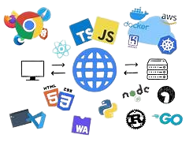

CSS HTML
Developpeur full-stack
Apprenti
"Apprendre est la voie vers le succès."
Etudiant

"Apprendre est la voie vers le succès."
Etudiant


MASTER 1 & 2 Informatique et Système d'Information à Cloud Campus (Paris, France), 2023 - 2025 - Développement d’applications web et mobile - Analyse et définition de stratégies informatiques - Pilotage de l'information décisionnelle d'un SI - Cybersécurité et protection des systèmes d'information.